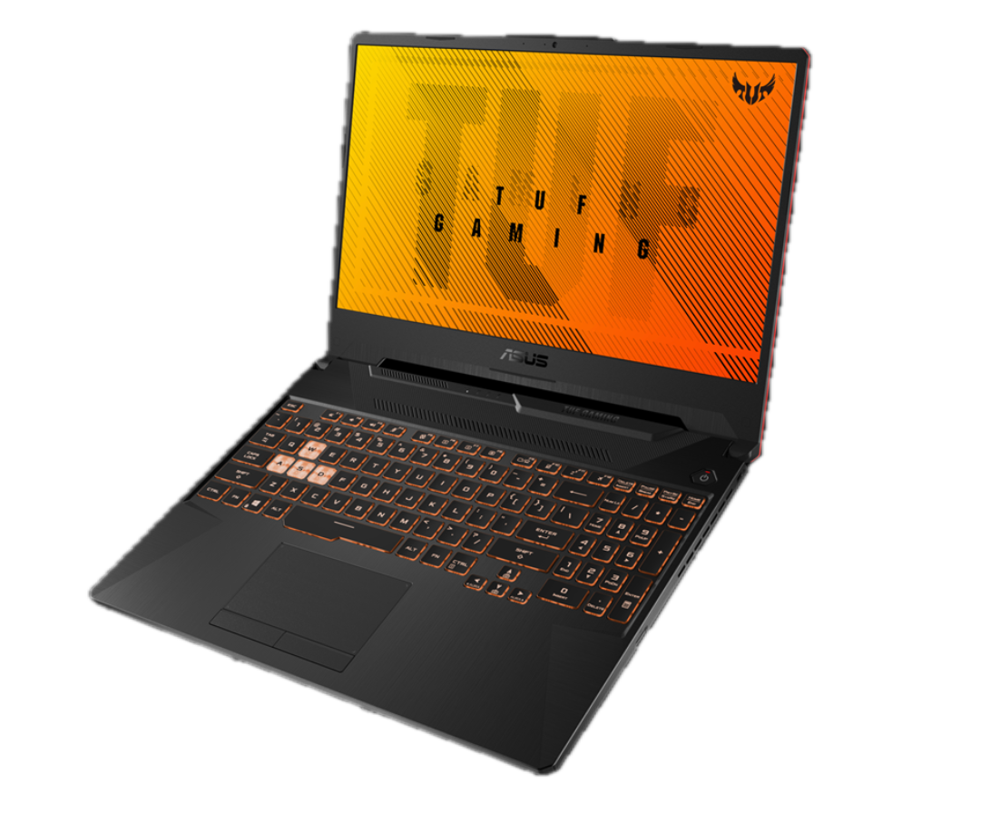
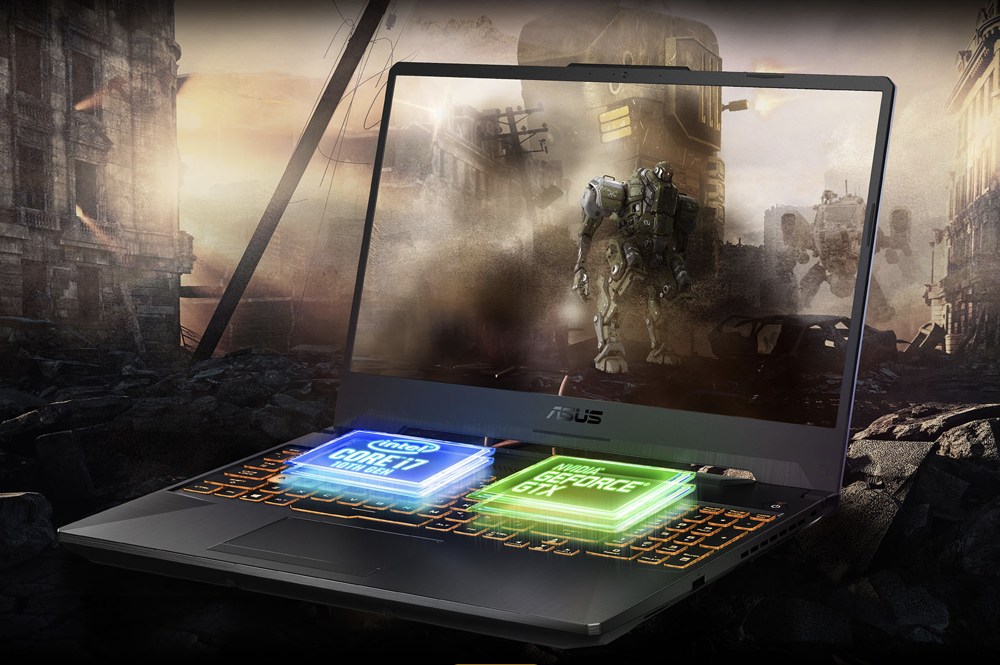
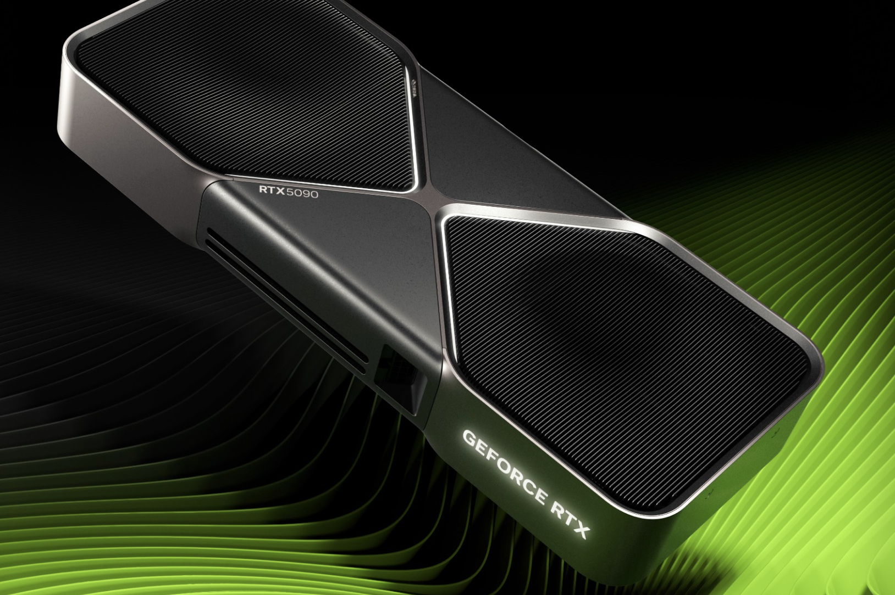
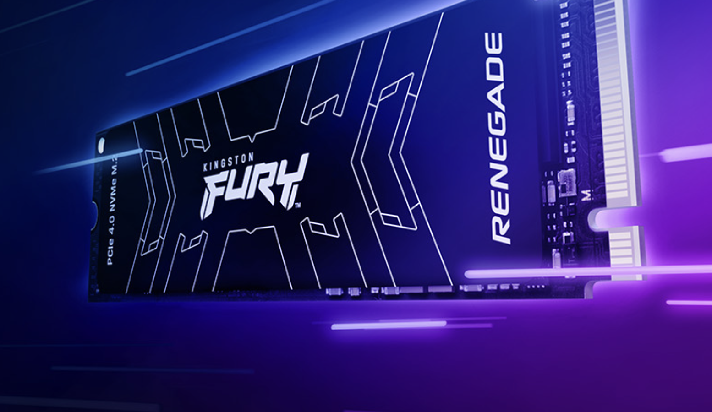

ASUS TUF GAMING.
Kekuatan yang Tetap
Ditujukan untuk permainan yang serius dan daya tahan dunia nyata, TUF Gaming F15 adalah laptop gaming Windows 10 Pro yang terisi penuh yang dapat membawa Anda menuju kemenangan. Didukung oleh CPU Intel® Core™ Generasi 12 12500HS, terbaru dan GPU GeForce® RTX 3050, permainan penuh aksi cepat, lancar, dan sepenuhnya memenuhi layar tingkat IPS yang cepat hingga 144Hz. Bahkan saat membanggakan sasis yang lebih kecil dan lebih portabel daripada pendahulunya, laptop gaming ini juga memiliki baterai 90Wh yang lebih besar untuk masa pakai baterai yang unggul. Pendinginan pembersihan diri yang efisien dikombinasikan dengan daya tahan kelas militer khas TUF untuk menjadikan pejuang jalan yang telah teruji dalam pertempuran ini menjadi sekutu yang kuat bagi setiap gamer.
Deskrpsi

performa dan Desain yang memukau
ntel Core i5-12500H adalah prosesor generasi ke-12 (Alder Lake) yang dirancang untuk laptop dengan kebutuhan performa tinggi. Prosesor ini menggunakan arsitektur hybrid yang menggabungkan 4 performance core dan 8 efficiency core,.

Visual Tangguh, Aksi Tanpa Batas.
Layar 14 inci beresolusi QHD (2560x1440) dengan panel IPS-level dan refresh rate 144Hz memberikan pengalaman visual super halus, detail tinggi, dan cocok untuk gaming serta produktivitas kreatif. Reproduksi warna yang akurat membuatnya ideal bagi content creator.

Tenaga Cerdas, Performa Cepat.
Intel Core i5-12500H (Gen 12) menawarkan performa tinggi berkat arsitektur hybrid yang menggabungkan 4 Performance-core dan 8 Efficiency-core, total 12 core dan 16 thread. Dengan kecepatan turbo hingga 4.5 GHz dan fabrikasi Intel 7 (10nm), prosesor ini memberikan keseimbangan optimal antara kinerja multitasking dan efisiensi daya, ideal untuk produktivitas berat, gaming kelas menengah, dan penggunaan kreatif di laptop.

RTX 3050 Gaming Nyata, Harga Bersahabat
GeForce® RTX 3050 menghadirkan teknologi ray tracing dan DLSS dari arsitektur NVIDIA Ampere, memberikan grafis realistis dan performa lebih tinggi dengan efisiensi daya yang baik. Cocok untuk gamer dan kreator pemula hingga menengah, RTX 3050 memungkinkan pengalaman gaming 1080p yang lancar serta akselerasi AI untuk aplikasi kreatif dan multitasking modern..

Kecepatan Ekstra, Waktu Loading Hilang.
SSD 512GB PCIe® 3.0 NVMe™ M.2 menghadirkan kecepatan baca/tulis tinggi untuk booting, loading game, dan transfer data yang jauh lebih cepat dibanding HDD atau SSD SATA. Dengan desain ringkas dan efisiensi tinggi, drive ini cocok untuk pengguna yang menginginkan performa cepat dan kapasitas lega dalam satu paket andal..

Tenaga Penuh, Performa Maksimal."
Adaptor daya ASUS 200W dirancang untuk memberi pasokan daya stabil dan efisien bagi laptop performa tinggi. Dengan daya besar, adaptor ini memastikan kinerja optimal saat menjalankan aplikasi berat, multitasking ekstrem, atau sesi gaming tanpa gangguan. Kompak dan tahan lama, cocok untuk kebutuhan kerja maupun hiburan intensif..
*Gambar hanya ilustrasi. Spesifikasi dapat berbeda tergantung varian.
Saran dan Masukan (Opsional)
Jika Ada saran dan Masukan silahkan ketikkan di bawah.

{kind=link}
{kind=link}
{kind=link}
{kind=link}